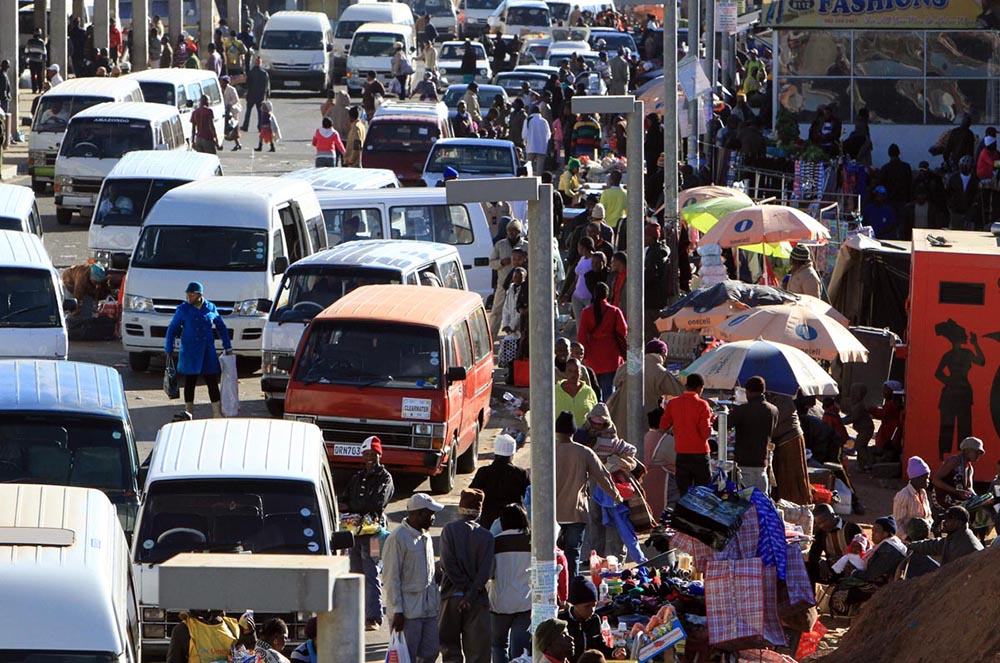
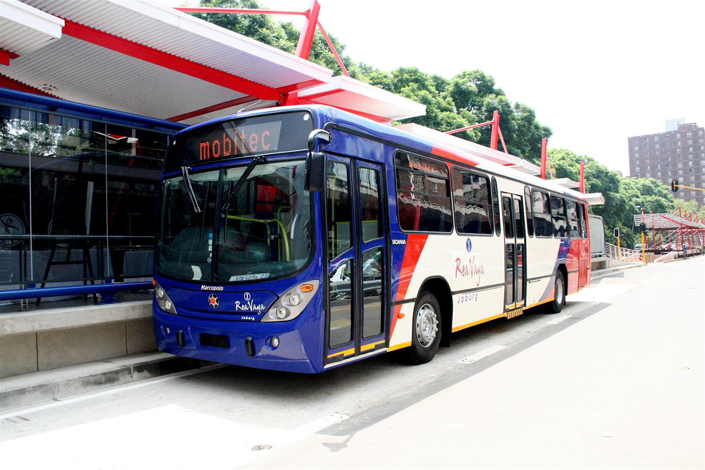
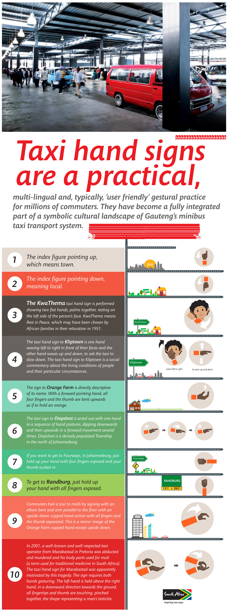
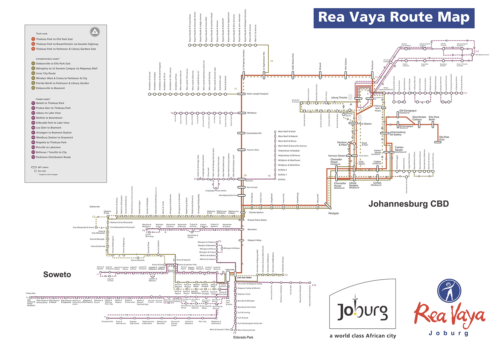

A rendering of the Rea Vaya as an integral component in Johannesburg's new spatial vision for the city's transit-oriented development. Source: City of Johannesburg Group Communication and Tourism Department
Introduction: 2010 FIFA World Cup & the Rea Vaya
Following its successful bid to host the 2010 FIFA World Cup, the South African government has committed itself to investing in the infrastructure, logistics, communication and security that will be needed to ensure a successful hosting of the World Cup.
Public transport development was a crucial index for creating a legacy from the investments during the World Cup, with aims to transform Johannesburg into “a world-class African city”. The Rea Vaya (‘We are going’) Bus Rapid Transit system is one of the key infrastructure projects that was accelerated in anticipation for the kick-off of the 2010 FIFA World Cup, acting as a major transportation carrier of audiences to and from matches in the city during the World Cup. It was promised to leave a legacy of “A New Era of Transport for Johannesburg”, where the Rea Vaya was central to the city’s plan to revitalize the city center and reestablish an integrated civil society with safe public spaces and safe public transportation systems.
Notably, the Bus Rapid Transit (BRT) system— one that features center-aligned, barrier-separated busways with prepaid boarding, raid platforms for level boarding with new stations with scheduled buses— is not a brand-new transportation network, but rather, an attempt at formalizing the prevailing minibus-taxi industry in Johannesburg. This minibus-taxi industry, seen as the primary mode of transportation for a large majority that do not own a car in Johannesburg, is also perceived as a source of violence in the city.
This essay aims to view Johannesburg through the lens of the BRT, where it begins by framing the emergence of today’s minibus-taxi industry within the spatial framework of apartheid Johannesburg, going on to explore the conditions of the informal transportation services pre-Rea Vaya. The essay then describes the complex negotiations in the formalization of the minibus-taxi industry into the Rea Vaya BRT, drawing attention to the multiplicity in stakeholders and financial aspects involved. Thereafter, it delves into the implementation of the Rea Vaya at present and its intended future, noting the resistance and violence that has taken place in this formalization process. Finally, it will evaluate the success of the BRT through an analysis of BRT usage data based on the 2014 Gauteng Province Survey.
Minibus-Taxis in Johannesburg
Johannesburg’s informal public transport sector begun as early as the 1940s. The apartheid regime in place from 1948 to 1994 influenced spatial planning policies that were designed to restrict the Black South African labor pool within townships sufficiently far away from the economic hub of the Central Business District (CBD) and traditionally white neighborhoods, yet still within a considerable distance to access the low-paying jobs in these neighborhoods. Majority of these townships were situated within 25 to 30km from the CBD— beyond the reasonable distance to walk or bike, leading to the emergence of an informal public transport sector responding to this lack of transport access for the Black population. Individual, largely small-scale and predominantly owned and operated by Black South Africans, these 8- to 12-seater ‘minibus-taxis’ provided Johannesburg’s Black population access to employment areas (usually in the wealthier White suburbs in the north) and urban areas and activities. The minibus-taxi industry was one of the rare instances where Black entrepreneurship was permitted during the apartheid regime.
The 1988 Transport Deregulation Act that removed most entry barriers to the minibus-taxi industry resulted in explosive growth of the industry. The five-year period between 1985 and 1990 saw a 2,500% increase of the number of permits issued for minibus-taxis in Johannesburg.
1
This rapid rise in minibus-taxi operators resulted in increasingly difficult regulatory efforts of the industry, particularly in minimum safety standard and labor conditions. The oversupply of minibus-taxis also drastically impacted Johannesburg spatial environment by severely congesting the city’s major highways and road networks, and creating a territorial nature in the minibus-taxi routes in the city.A 1929 tramway streetmap is 'geo-juxtaposed' onto the minibus taxi map. Much has not changed in the city's central-peripheral transport model centred on the Central Business District (CBD) in downtown Johannesburg. Data Source: 2004 Gauteng Province National Travel Survey. Image Source: Holmden's Street Map of Johannesburg and Suburbs. Compiled by the Map Office Johannesburg, revised by Norman C. Dickie. National Heritage Trust.
Shortly after this sharp rise in minibus-taxi operators, minibus-taxi associations were formed to protect individual routes, where each association as its respective turf, and minibus-taxi routes within the association would depart from its area of ‘management’ and terminate at the CBD, or vice versa. The minibus-taxi driver would pay a fee to the association in exchange for the right to operate on a specific route within its territory. This protectionist environment allowed for violence and a mafia mentality to proliferate, where associations enforce territorial rights to the routes, often using violence to settle disputes where the ‘turf war’ rivalries can escalate into a full-fledged gang warfare. These violent frictions could potentially escalate into deaths, either on the driver or the passenger. The proliferation of violence could be exemplified in the normalization in the term “death from the bad strategy”2
where operators would board the back seats of their rivals’ minibus-taxis and shoot the driver from the back. In 1993 alone, 330 deaths were reported to be attributed to minibus-taxi violence.3
 
[top] The former Soweto minibus taxi rank; [bottom] A Rea Vaya BRT station along the trunk route. Source: [top] South Africa Safe Travel Magazine, [bottom] Joburg East Express
These 15-seater informal minibus-taxi operate without a set schedule, and passengers often have to wait at taxi ranks until the minibus-taxi is full before it will depart, leading to drastically fluctuating passenger travel times. Because the public transport in the Gauteng Province (whereby the City of Johannesburg is one of its municipalities) was provided by a profusion of uncoordinated operators operating within their own territories, minibus routes often began in one neighborhood and terminate at the CBD. As such, passengers intending to travel from one neighborhood to another must often take two routes, transferring at the CBD to another minibus-taxi and paying its according fare to reach one’s destination. Just as the minibus-taxi system vary from area to area, passengers had to learn specific hand signals to flag minibus-taxis traveling to a respective destination, as there was no universal information system or signage available on the mode of transportation. The fragmentation and deregulation of the informal minibus-taxi industry result in information disorganization, travel time unpredictability, and low convenience standards for its passengers.

{kind=link}
To board a minibus taxi in Johannesburg, one must first get to the right taxi rank— there are four main taxi ranks in the Johannesburg CBD. While there are written signs for respective destinations at the taxi ranks, one must be fluent in taxi hand signals to flag the correct minibus taxi anywhere outside the ranks. Minibus taxis do not have designated stops; one simply has to flag a taxi using the correct hand signal, as illustrated in this infographic. Source: The Randburg Sun
Before the Rea Vaya system was introduced in Johannesburg, urban transport within the city was dominated by the informal public transport sector. In 2003, minibus-taxi usage comprised 72% of all public transport taken in Johannesburg.4
While these informal operators have been noted to provide a low-fare, high-availability service to its passengers, the negative impacts— that include predatory pricing, low vehicle and passenger convenience standards, poor and often violent road safety records, and significant contribution to traffic congestions— are cited as justifications for a greater government involvement in the regulation of the minibus-taxi operations.
From 1995 onwards, the new South African government, understanding the importance of engaging with the minibus-taxi industry, made numerous attempts at incorporating it into government regulation. Among the measures put in place were the National Land Transport Transition Act in 2003 that aimed to rationalize the existing operators into a national transport plan; the Taxi Recapitalization Program to force the industry to replace and existing fleet of minibus-taxis into larger, purpose-designed new vehicles; and the founding of a national taxi council (SANTACO) to establish a single representative body for whom the city could negotiate with and consult. These measures, however, were met with low success rates due to a combination of lack of involvement with the minibus-taxi industry in planning processes, limited government implementation capacity and an active resistance from the minibus-taxi industry.
5
BRT as a Global Phenomenon
First implemented in Curitiba, Brazil in 1974, the Bus Rapid Transit (BRT) system has taken off as a transportation innovation model in developing cities of the Global South.
6
The BRT is defined as “a flexible rubber-tired rapid transit mode that combines stations, vehicles, services, running ways, and Intelligent Transportation Systems (ITS) elements int am integrated system with a strong positive identity that evokes a unique message”.7
The technology’s relatively low cost and simplified infrastructural requirements allow for a quicker and more flexible implementation schedule. Due to this adaptability and cost-effectiveness, the BRT is emerging as a popular transportation formalization model in developing cities with staggering population growth and a preexisting informal public transit network, especially as an alternative to rail-based mass transit systems. While specific BRT characteristics are adapted variably in different cities, it includes certain elements that, together, makes for a comparable transportation provision as the rail mass transit system, yet at a fraction of the cost. These elements often include physical infrastructure: exclusive bus lanes and stations, operational features: frequent bus headways and integration between routes, technological features: automated fare collection and centralized tracking and system management, regulatory features: enforced exclusivity of bus lanes and marketing features: a unique branding for the system. Since Curitiba, the BRT system has been adopted in many cities thereafter, such as Metrobus in Mexico City, Transantiago in Santiago de Chile, Beijing BRT in Beijing and TransMilenio in Bogota. The TransMilenio model would go on to serve as an important reference model in the planning of Johannesburg’s BRT system.
In 2005, the then-Mayor Amos Masondo pledged to use the inpouring FIFA World Cup investments to secure long-term benefits for the city, especially in terms of public transportation upgrading. He created ‘The City of Johannesburg Mayoral Committee’, tasking them to look into reorganizing Johannesburg’s urban mobility. The Johannesburg Roads Agency and the Metropolitan Bus Company were placed under the Committee’s control— a major factor advancing the consideration of the BRT as a possible solution for formalizing Johannesburg’s public transportation sector. The global success of the BRT system was a crucial draw to the Committee, which within nine months of considering it as an option, organized a BRT study visit to Bogota, Colombia and Guayaquil, Ecuador. One of the key lessons from Bogota’s TransMilenio was the need to establish a strong identity and brand image for the BRT system, where the name “Rea Vaya” (“We are Going” in Scamto) was chosen in the Johannesburg BRT branding campaign.
8
Formalizing the Minibus-Taxi Industry
South Africa’s hosting of the FIFA World Cup in 2010 acted as a catalyst integral in the public transportation improvements, where funding could be leveraged to fast-track planned infrastructural investments.
9
Construction for Phase 1A, linking Soweto— a high-density township– to the CBD began less than a year after the first scoping study to Colombia and Ecuador. Primary funding from the central government under the National Public Transport Infrastructure and Systems Grant expedited the start date for Phase 1A’s construction of the segregated roadways and 27 stations, as well as covering all transitional operating costs.10
Learning from past attempts at formalizing the minibus taxi industry, the city sought to actively involve the minibus-taxi operators in the formalization process, initiating engagement with the bus and minibus-taxi operators potentially affected by the BRT projects months before formal negotiations began. In fact, the city invited Johannesburg’s two largest taxi operators associations— “Top Six Taxi Management” and “Johannesburg Regional Taxi Council”— along to the first scoping study to Colombia and Ecuador, showcasing the concept of the BRT first-hand to the minibus-taxi operators.
A timeline of the critical events within the implementation process of the Rea Vaya BRT system. The different colors highlight the multiple stakeholders involved, such as the City of Johannesburg, the minibus-taxi associations, the National Government and FIFA World Cup Planning, as well as other events triggered in response to the Rea Vaya.
It is important to note that a crucial factor in such complex formalization negotiations is not merely the involvement of stakeholders from an early point, but to identify which stakeholders were to be engaged, as points of opposition and violence often arises from parties not involved in the process.
11
Learning from its past failures, the city began to identify these stakeholders, forming a Taxi Steering Committee (TSC) from 18 identified potentially-affected taxi associations. Hereafter, the city began negotiating with the representatives from TSC, raising public awareness of the Rea Vaya project through jointly-held workshops and roadshows between the city and TSC, as well as inviting them to a second BRT study visit to Bogota and Pereira, Colombia. The city’s investment in active engagement culminated in a signed memorandum in October 2007, where the taxi associations committed their involvement in the formalization negotiations and agreed upon a framework for these negotiations to take place. However, the taxi associations stopped short of providing their full support for the Rea Vaya project, choosing to withhold until specific details are ironed out.
In August 2009, negotiations between the city and all other affected minibus-taxi operators began. Among the issues addressed include how affected operators can become shareholders in the to-be-formed Rea Vaya BRT operating company, compensations for loss of income (either due directly to the Rea Vaya route or from their inability to operate due to violence and harassment from other operators stemming from their cooperation in the Rea Vaya project), and the employment of displaced taxi drivers. These negotiations lasted for 14 months, longer than projected, and far after the official launch date in time for the FIFA World Cup.
The Rea Vaya Phase 1A officially launched on 30 August 2009. As negotiations with the taxi operators were still ongoing, the city appointed CLIDET (a subset of the current public bus operator Metrobus) to run the Rea Vaya temporarily. It was only 1.5 years later, in February 2011, when the negotiations ended and 313 taxi operators relinquished their businesses and surrendered their 585 minibus-taxis for scrapping under the Taxi Recapitalization Program. The city handed over the operations of the Rea Vaya to a newly-formed company, Piotrans. Piotrans was to be an operator-owned operating company, where the minibus-taxi vehicle scrapping allowance were invested as working capital in Piotrans in exchange for rights to run route services for Rea Vaya. Piotrans, in an agreement signed for the first 12 years of operation, was to be paid based on the distance travelled in a route as set by the city rather than on the number of passengers transported. As such, the city fundamentally assumes all financial risk stemming from low usage of the Rea Vaya.
BRT: Infrastructure & Public Perception
[orange] Johannesburg's Minibus Taxi Industry in 2004; [blue] The Rea Vaya BRT Trunk routes with dedicated bus lanes; [light blue] The Rea Vaya Complementary and Feeder (in dashed lines) routes; Planned future Phase 1C and 1D with its [green] Trunk routes and [light green] Complementary routes; juxtaposed with thesubregions within the city, where darker colors correlate to lower average monthly income
The Rea Vaya adapted the BRT system to three different route types: the trunk route with larger, 18m buses running on dedicated bus lanes, a feeder route with standard 13m buses ‘feeding’ passengers from deeper within the neighborhood into the trunk route stops, and a hybrid complementary route with standard 13m buses that serves between the dedicated bus lanes and the regular traffic lanes. For example, Phase 1A comprises of a single trunk route run-ing on a median-separated bus lane between Thokoza Park in Soweto and Ellis Park in east Johannesburg CBD. This route is supported by five feeder routes within Soweto that runs on regular traffic lanes connecting populations further into the neighborhood to the bus stops on the trunk route. Three complementary routes— one internal to Soweto, one inner city CBD distribution route, and one connecting Meadowland to the city centre/Ellis Park— run between regular traffic lanes and the dedicated trunk route lanes to provide support to the singular trunk route.
{kind=link}
The BRT system at present. The Rea Vaya BRT system composes of three route types: Trunk routes (in red): 18m buses operating in median-separated busways at BRT stations; Complementary routes (in yellow): Standard 13m buses operate on hybrid route of curbside bus stops and the trunk routes' separated busways; Feeder routes (in pink): Standard 13m buses stop at curbside bus stops, delivering passengers to BRT stations where they transfer on to trunk routes. Source: Rea Vaya Official Website
The Rea Vaya planners put in considerable attention to ensure a functional and enjoyable passenger experience. Features such as pre-paid boarding with integrated fares on all routes, level boarding for full accessibility, multiple stopping bays, and secure, weather-protected stations. Local artists were commissioned for each of the stops along the trunk route, designing the stop with the local urban environment in mind. The buses operate at a fixed schedule, with a 3- to 4-minute frequency at peak times and 20-minute frequency at off-peak for the trunk routes. This user-interface integration, along with the network integration of all routes, the Rea Vaya has vastly altered one’s perception of traveling within Johannesburg public transport system. Instead of viewing the city as fragmented routes beginning and ending at the CBD as portrayed in the minibus-taxi system, the city is now stitched together through the Rea Vaya— and this is especially so when the full network of the BRT that includes Phase 1C connecting to Alexandra and Sandton is implemented.
The months preceding the Rea Vaya Phase 1A launch saw numerous protests from minibus drivers,
12
most of whom reluctant to cooperate with the government due to past experiences in previous government formalization schemes. Four days before the Rea Vaya launch, a minibus-taxi association “United Taxi Association Forum” filed an urgent (but unsuccessful) court application to stop the launch.13
The national taxi body, SANTACO, threatened to embark on a national strike action protesting its omission from the negotiation process.14
The protests took a violent turn three days after its launch, when a gunman on board a nighttime Rea Vaya bus opened fire, injuring two persons. The police responded with neighborhood raids and a widely-publicized manhunt. Months after the launch, Rea Vaya buses and stations remained guarded by law enforcement and army personnel.15
A pro-BRT minibus-taxi operator was shot dead even after the BRT launch,16
when negotiations were still ongoing with minibus-taxi associations to transfer operations over from the temporary Rea Vaya operating company, CLIDET. The subsequent roll-out of feeder and complementary routes saw individual Rea Vaya buses accompanied by police escort amid minibus-taxi association protests.17
The threat of violence persisted through the next 14 months until the negotiations ended in February 201l, with heightened security measures and nervous passengers amid each roll out of routes.18
While the threat of violence from minibus-taxi associations against the BRT has subdued slightly over the last 8 years, violence associated with the Rea Vaya has taken on a new form. A 2016 protest in Mzimhlophe, Soweto against Eskom, the South African utility company over frustrations in electricity supply cut saw the torching of a Rea Vaya bus in the neighborhood.
19
The Riverlea protests in 2017 over public utility delivery supplies and development projects turned violent as protestors torched a separate Rea Vaya bus station, resulting in closed routes for days after the incident.20
Here, the violence incited at the physical infrastructure of the Rea Vaya shifts from a direct correlation with the public transportation system, but the Rea Vaya as a figure of affiliation and ‘collusion’ with authority figures.
Conclusion: The BRT's future
Phase 1C imagines a third trunk route connecting the city centre with Alexandra along the Louis Botha Avenue and a fourth between Sandton and Alexandra. Initially planned to commence operations in early 2015, negotiations are still underway as of 2017 and as noted by the Transportation Department, is unlikely to begin before 2020.
Based on data obtained from the 2014 National Travel Survey, the predominant mode of transport still prevails in every region of Johannesburg. The current usage of the Rea Vaya is low, comprising only of a minor subset in the public’s preferred mode of transport. Even though it may seem like low adaptation to the new public transport system, it is important to note a much higher usage percentage in Soweto and Orange Farm/Ennerdale relative to other subregions.
21
These two subregions are also where the Phase 1A and 1B of Rea Vaya BRT system has been implemented, showing a positive response in switching to the system. While the conversion to the Rea Vaya as a mode of transport is not as overwhelming as the forecasts leading up to its official launch during the FIFA World Cup, the implementation of the Rea Vaya cannot necessarily be concluded as unsuccessful. It resists the idea of the Rea Vaya BRT as an immediately effective solution to the informal minibus-taxi industry, but one that requires complex negotiations with multiple stakeholders as described. The FIFA World Cup was both advantageous and disadvantageous to the implementation of the BRT. It provided the necessary kickstart to the implementation of the system through securing funds and widespread government involvement and coordination to initiate the project. The World Cup also played a role in hindering negotiations, especially in the rush to officially launch the Rea Vaya in time for the World Cup before negotiations with minibus-taxi associations have ended. The quick-patch solution to allow temporary operations by a public bus company generated dissatisfactions and re-conjured feelings of mistrust between the authority and the minibus-taxi industry.
The implementation of the BRT system as a formalization process have been largely successful in Johannesburg. Yet, the success lies largely in part to the city authority’s willingness to cooperate and involve the multi-party negotiations with the informal transportation industry, and while the 2010 FIFA World Cup was a catalyst in resource investment for the project, the success of the project lies in the long-term commitment of the city to implement this system in active involvement with the informal minibus-taxi industry.
Please note: footnotes not visible on mobile.
Return to Student Projects